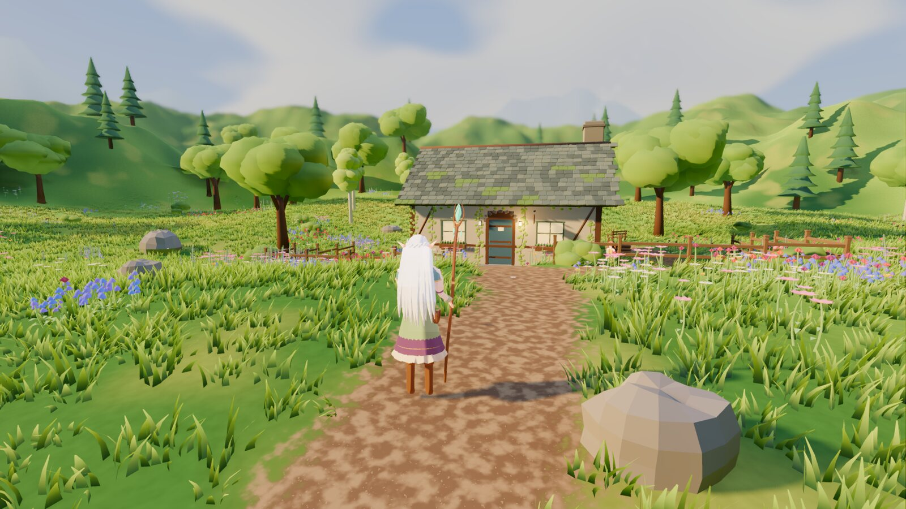
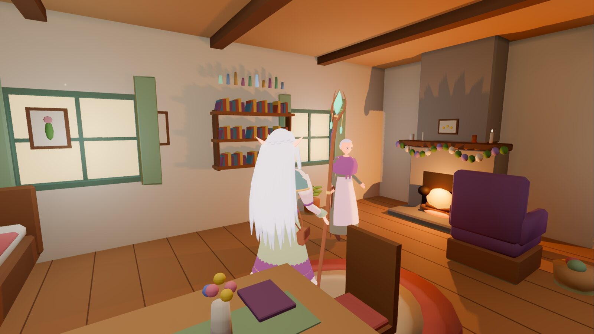
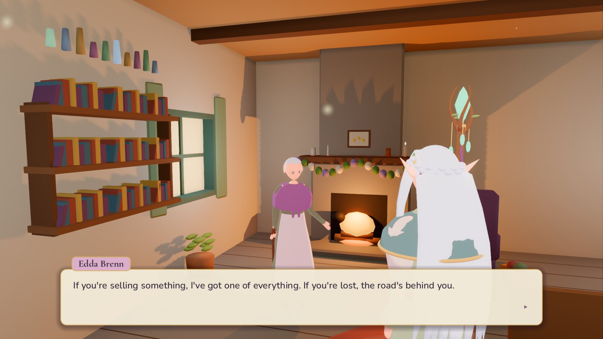
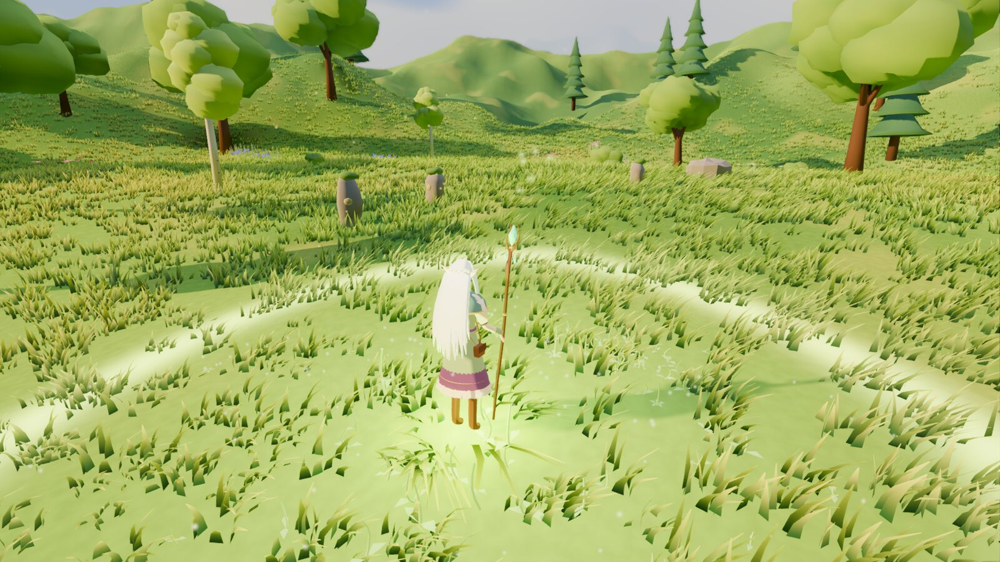
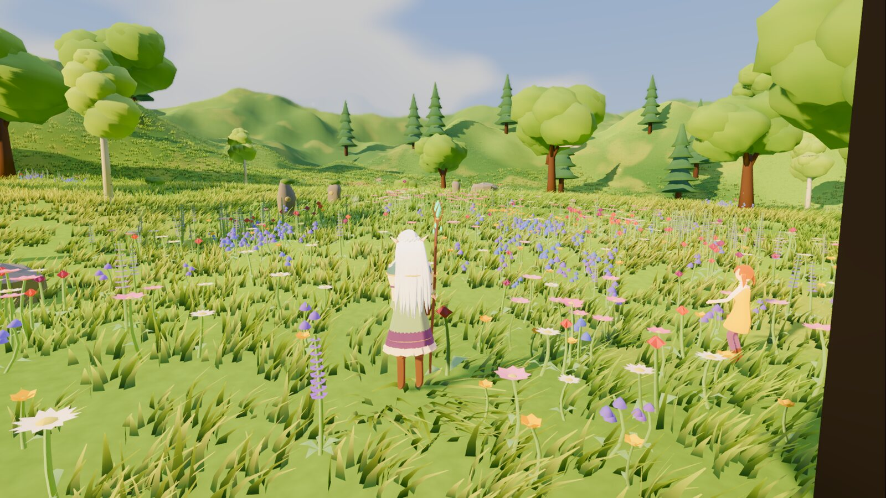
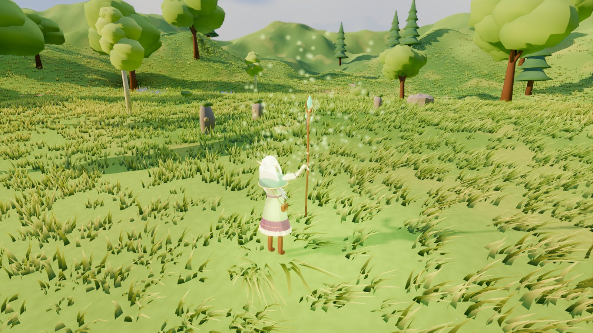
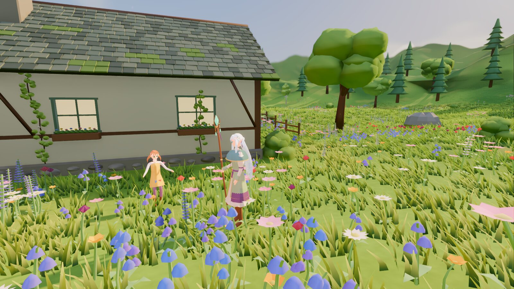
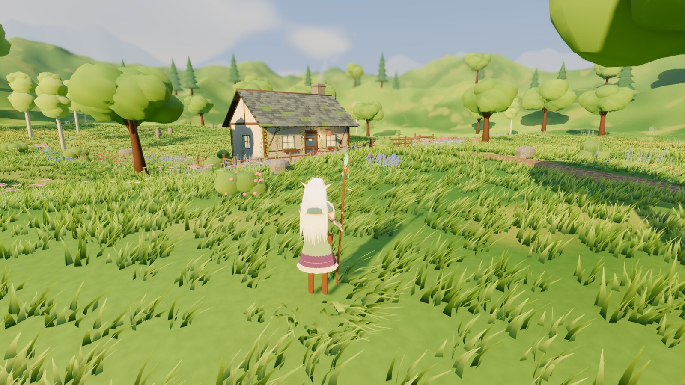

✦ ✦ ✦
A small, warm, third-person fantasy
You play Linnaea, a centuries-old elven mage. She is curious about obscure and seemingly useless spells, wry, kind, and not very good at noticing how short human lives are. Her party defeated the Hollow King half a century ago. Now she wanders: meadows, cottages, villages, ruins. She meets people, learns odd magic and keeps (or forgets) promises.
It's a game about falling in love with people and places first, and letting time give those moments meaning later.
“Everything wilts, elf. That's never once stopped anyone planting.”
What it's about
The pillars the team is building toward. Most of these are planned, not shipped. See the roadmap for honest status.
Wonderful, useless magic
Grow a field of flowers, warm a teacup, call butterflies. Strange spells are collectable and sometimes unexpectedly useful.
A journal of memories
Moments you share with people are written down. Years later they come back as letters, graves, old jokes and grandchildren who know your name.
Time that matters
Days, seasons and decades. Friends age, retire, move to the coast. You barely change.
Cozy places worth standing in
Painterly meadows, wood-and-stone cottages, warm interiors, wind in the grass.
Companions and campfires
Travelling friends who banter, quarrel, eat together and have lives of their own.
Magic when it's needed
Readable third-person spellcasting, barriers and creatures with weaknesses. Later, and never at the cost of exploring.
From the prototype
Every image below is an actual in-game screenshot captured from the Godot prototype. Models, lighting and UI are early and will change. There is no concept art on this page yet.








Currently in development
Loading status…
Status couldn't be loaded. See the issue board.
Status data last updated . Follow work on the issues, the development board and project state. Nothing here is released yet, and there is no release date.